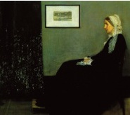

James McNeill Whistler’ın, Whistler’ın Annesi olarak bilinen ünlü portresi anneliğin sembolik bir görüntüsü oldu.

Whistler (1834-1903), Massachusetts, Lowell’da doğdu. Çocukken altı yılını babasının demiryolu mühendisi olarak çalıştığı Rusya, St. Petersburg’ta ve üç yılını da İngiltere’de olmak üzere yurtdışında geçirdi. Amerika Birleşik Devletleri’ne döndükten sonra West Point’e kayıt yaptırdı. Ancak üçüncü sınıfta bir kimya sınavında başarısız olmasının ardından, okuldan ayrılması istendi. 1854’te Whistler, Washington DC’ye taşındı ve asitle resim oymayı öğrendiği ABD Sahil ve Jeodezik Araştırma Kurumu tarafından işe alındı. 1855’te Avrupa’ya yelken açtı ve sonunda Londra’ya yerleşti.
Whistler’ın annesi, Anna Matilda McNeill Whistler, 1863’de onunla yaşamaya geldi. Her zamanki modeli hasta olduğu bir sırada onun portresini yaptı. Gri ve Siyah Düzenleme: Sanatçının Annesinin Portresi ismini vermiş olduğu bu eseri, 1872’de Londra’da Kraliyet Akademisi’nde sergilendi. Eserin adından da anlaşıldığı üzere Whistler, annesinin kimliğine kompozisyonun şekli unsurlarından daha az önem atfetti. Bunu, “Bana göre, annemin bir resmi olması bakımından ilginçtir; ama halk portrenin kimliğini ne yapsın? Müziğin sesin şiiri olduğu gibi resim de görünüşün şiiridir ve mevzunun sesin veya rengin ahengiyle hiçbir ilgisi yoktur.” diye açıklamıştı.
Portrede Anna, sade siyah bir elbise ve bir spanyel köpeğin kulakları gibi aşağıya sarkan yarı şeffaf kumaşlı beyaz bir şapka giyer. Whistler, kompozisyonu içinde farklı dokuları iletmek için farklı fırça yöntemleri kullandı. Başlangıçta annesinin ayakta resmini yapmaya niyetlenmişti ama yeteri kadar uzun zaman ayakta poz veremeyeceğinden fikrini değiştirdi. Anna’nın kasvetli kıyafeti, bir yas işaretiydi; kocasının 1849’da ölümünden dolayı siyah giyinmişti.
Resim, 1883’te Paris’te tekrar sergilendi ve 1890’da Fransız hükümeti tarafından satın alındı. Başlangıçta Lüksemburg Müzesi’nde gösterildi, sonra müze politikası gereği Whistler’ın ölümünden on yıl sonra Louvre Müzesi’ne taşındı. Bugün Paris’teki D’Orsay Müzesi’nde sergilenmektedir.
EK BİLGİLER:
1. Resim, Amerika’nın annelerini onurlandırmak üzere 1934’te bir posta puluna kondu.
2. Resim, anne olarak poz veren Bullwinkle, Barbie ve Ronald Reagan gibi şahsiyetlerle pek çok karikatüre ilham verdi.
3. Whistler, fazla boyanın serbestçe damlamasına izin veren adi keten tuvalleri kullanmayı tercih etti.